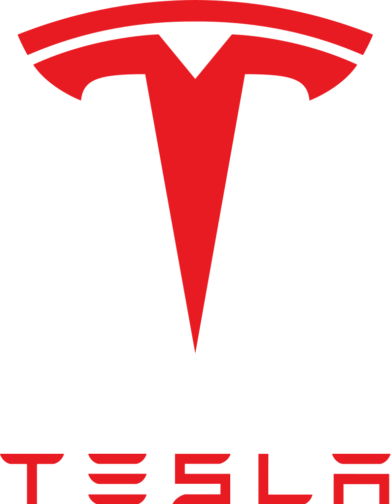
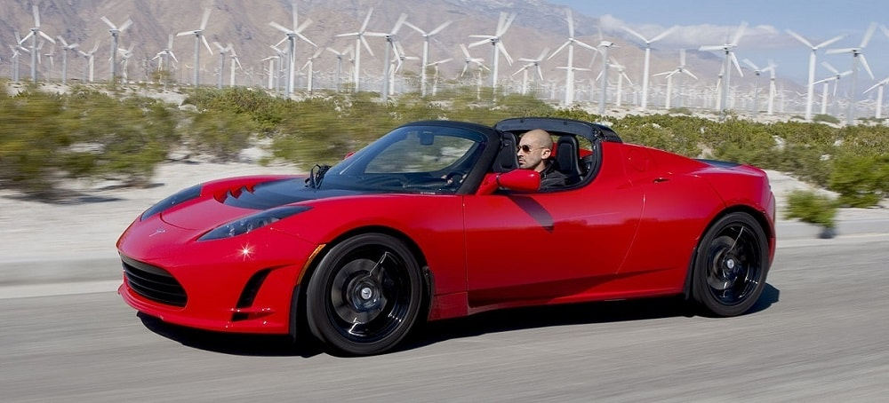
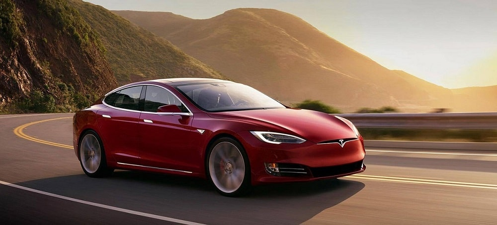
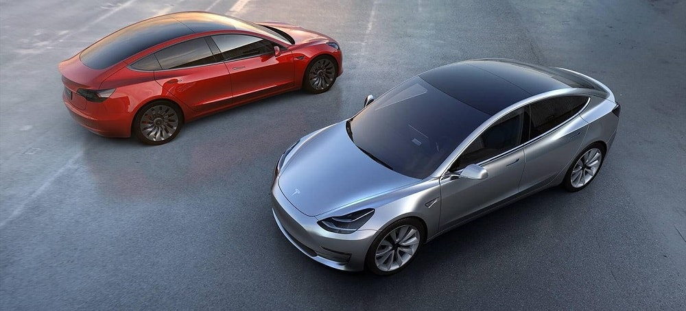

Tesla was founded in 2003 by a group of engineers who wanted to prove that people didn’t need to compromise to drive electric – that electric vehicles can be better, quicker and more fun to drive than gasoline cars. Today, Tesla builds not only all-electric vehicles but also infinitely scalable clean energy generation and storage products. Tesla believes the faster the world stops relying on fossil fuels and moves towards a zero-emission future, the better.
Tesla’s vehicles are produced at its Fremont factory in California, where the vast majority of the vehicle’s components are also made. As Tesla continues to expand its product line, Tesla’s production plan is also set to increase to a rate of 500,000 vehicles a year by 2018.

The Roadster was the first highway legal serial production all-electric car to use lithium-ion battery cells and the first production all-electric car to travel more than 200 miles (320 km) per charge.Tesla sold about 2,450 Roadsters in over 30 countries, and most of the last Roadsters were sold in Europe and Asia during the fourth quarter of 2012. Tesla produced right-hand-drive Roadsters from early 2010.
The Tesla Model X is a full-sized, all-electric, luxury, crossover SUV made by Tesla. that uses falcon wing doors for access to the second and third row seats. The prototype was unveiled at Tesla’s design studios in Hawthorne on February 9, 2012. The Model X has an official EPA rated 237–295 mi (381–475 km) range and the combined fuel economy equivalent and energy consumption for the AWD P90D was rated at 89 mpg-e (23 kWh/100 km or 39 kWh/100 mi).


The Tesla Model 3 is a mid-size all-electric four-door luxury sedan. According to Tesla officials the standard Model 3 delivers an EPA rated all-electric range of 220 miles (350 km) and the long-range model delivers 334 miles (540 km). The Model 3 has a minimalist dashboard with only a center-mounted LCD touchscreen. Within a week of unveiling the Model 3 in 2016, Tesla said, they had taken 325,000 reservations for the car, more than triple the number of Model S sedans sold by the end of 2015.